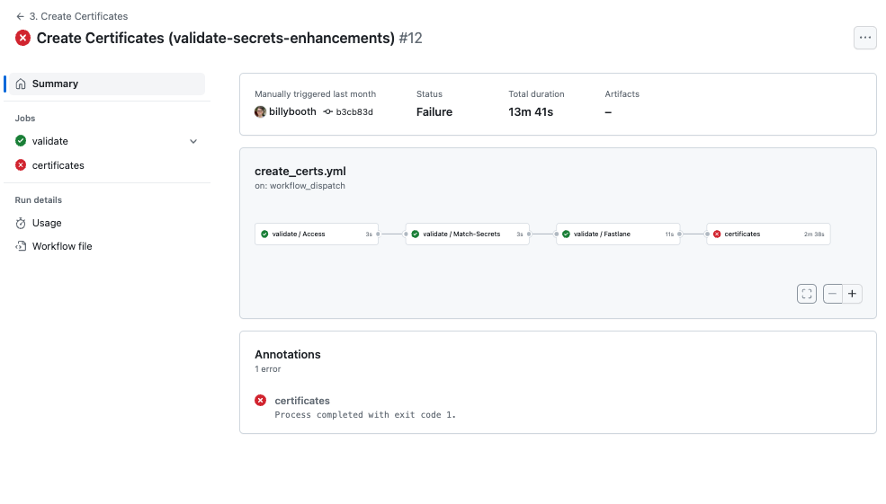

Errors with Browser
Help with Errors¶
If you get an error when building with a browser, use this page to figure out what to do.
If you are still unsuccessful, then post your request for help along with the link to your repository. For example - this link is used to test the build instructions and generate figures for LoopDocs. You replace your GitHub username where you see loopdocs-tester:
Mentors can go to your public GitHub repository, make sure your code is up to date, examine your customizations (if any), then click on the Action tab and view your log files directly.
- Do not copy from the log file and post the words
- Do not take a screenshot of what you think is an error
Username, Not Pictures
If you've been around the DIY community for a while, you know the mantra about screenshots. Well, when using a browser to build, screenshots are close to useless.
All that is needed to assist is your link or as a bare minimum your GitHub username.
But first - try to diagnose it yourself using this page.
Most Common Mistakes¶
Just updated?
If you just updated to version 3.4 from version 3.2.x, you must add a new Identifier.
If you missed this step - go do it now. Update from 3.2.x to 3.4
Certificate is missing
If you get this build error message: No code signing identity found and can not create a new one because you enabled, you do not have certificates needed to run the build.
These are some of the most common errors to date.
- You made a spelling error when adding
Secrets- Each secret must be spelled exactly the way it is presented in the instructions
- If you are using an automatic translation, please keep an original page open too and copy from it to make sure there are no spelling errors in the secret name
- You did not add the
App Group Identifierto all 4 of the required identifiers in this step: AddApp GrouptoIdentifiers- See Annotation without Clear Message (Build) for an example of this kind of failure
- You used a smart editor instead of a text-only editor to save your information
- It only takes one letter to be changed from lower-case to upper-case by your smart editor to ruin your day
- The alpha-numeric values used for
GH_PAT,FASTLANE_ISSUER_IDandFASTLANE_KEYcontain both upper and lower-case characters and all the values are case-sensitive
- When saving
TEAMID, you typed what you thought you saw instead of using copy and paste - You skipped running one of the actions
- You need to sign a program license agreement or update a credit card at Apple Developer
- Be sure to read Misleading Error Message
- You got an error regarding a branch with
alivein the name- You can delete any branch that starts with the name
aliveand try again - See Automatic Creation of
alive branch
- You can delete any branch that starts with the name
Error Annotations¶
Error annotations are available for the Loop app released version 3.4 and later. These were contributed by community volunteers along with the improvements to enable automatic updates and automatic builds.
Not all error messages have an annotation yet. In those cases, you will be required to search for the error string as explained in Find the Error.
Examine Annotation¶
If a GitHub Action fails, you will see a clear notification.
First consider the following results from the GitHub Action: 1. Validate Secrets.
Annotation with Clear Message¶
Your screen may look similar to the graphic below. The name in parentheses refers to the branch used to develop these wonderful messages. Yours may be (dev) or (main), once 3.4 is released.

But there are so many reasons why this could happen. The first step is to click on the link highlighted by the red rectangle in the graphic above. This opens a new detailed view. The GIF below shows two different error messages. The first frame shows the error in the Annotation box at the bottom (you may need to scroll down to see this), and you may need to click on "Show More" to see the full message as seen in the second frame. The third frame of the GIF shows a different message. Each one these messages is designed to make it easier for you to diagnose your own problem.

Notice that GitHub Action: 1. Validate Secrets is broken into three jobs each of which will either pass and show a green check or fail and show a red check. The secrets are validated with each action.
Annotation without Clear Message (Certificates)¶
Not all error messages have a clear annotation (yet).
For example, the graphic below shows a failure of GitHub Action: 3. Create Certificates .

This is an example of a message that is not terribly descriptive - which is why it is shown here. In this case, you can click on just the one job that failed. There will be less to sort through to find your error. The most likely reason for this error is Error: Could not Create.
Missing Certificates¶
If your certificates have expired, you will see this error when you try to build. It does not have a clear annotation. The error string starts with: No code signing identity found and can not create a new one because you enabled.

Annotation without Clear Message (Build)¶
The GIF below shows a failure of GitHub Action: 4. Build Loop . The nice messages have not been added to this yet - you will have to follow the Find the Error instructions, but now, you are automatically taken to the correct section so there is less of the log to deal with.
- Frame 1 shows the failure message - click on one of the build links highlighted with the red rectangle (it does not matter which link you click)
- Frame 2 shows the screen displayed after you click the link - you will see the display automatically move to the first item that failed
- The area indicated by the orange rectangle near the top right is where you will paste the strings offered in Action:
Build LoopErrors
- The area indicated by the orange rectangle near the top right is where you will paste the strings offered in Action:
- Frame 3 shows what happens when you paste in the correct string
- Note that if the string is not found, nothing happens
- If the string is found, the display automatically moves to the section of the log with that string
- The particular
Identifier, which does not have the requiredApp Groupfor this example, is the SmallStatusWidget- Note that with version 3.4, SmallStatusWidget is no longer used - perhaps an unfortunate choice for this GIF

Find the Error¶
This section is required when you need to search for a string to diagnose and error that does not have a clear annotation.
Misleading Error Message¶
If there are Apple Developer agreements you have not accepted, you may get errors when you try to Build that indicate your Apple Secrets are incorrect even if they are not.
- The misleading message tells you that one or more of these:
FASTLANE_ISSUER_ID,FASTLANE_KEY_IDorFASTLANE_KEYis not correct - Check your Apple Developer account for agreements first, before trying to fix those
- If you previously built successfully - it is almost certainly the agreement
- It can take 15 minutes to an hour after the agreement is signed before it can be used
If you need detailed instructions, click on this Apple Program License Agreement Help Page.
You can also get this message if the credit card used to purchase the Developer account is not current, e.g., no longer valid or expiration date has passed.
One user reported: The expiration date on the credit card used for auto-renew of my developer account was updated and the value in the Apple account did not match the new one. After updating my account with the new expiration date - Browser Build succeeded again.
Find Your Error¶
For Version 3.2.3 and earlier - later versions have an improved method for display errors.
There is a separate section for each step in the process. First, you must follow the Examine Annotation instructions to view the record of the failed action. Then go to the section for the Action you were trying to complete to look for possible error strings to copy into the search box. For each section there are possible strings to paste to search the log.
- Paste in a possible error string (copy it exactly); repeat until you find a match
- If the possible error string is found - follow the directions for that error
Error annotations are available for the Loop app version 3.4 and later for some of the actions. We believe the first two actions have a complete set of error annotations.
- Action:
Validate Secrets - Action:
Add IdentifiersErrors - Action:
Create CertificatesErrors - Action:
Build LoopErrors before a successful build - Repeat
Build LoopErrors after a successful build
If you discover a new error, please reach out to help us update the documentation.
Still Stuck?¶
It doesn't matter which action you are running; after the action completes, you will either see a green check mark for success or a red x mark for failure. The graphic below shows an example for the Add Identifiers action.

If you click on the action name, it opens a secondary screen as shown below.

Click on the top link to view the record of the failed action as shown in the graphic below. You will be pasting strings into the search box (highlighted with a green rectangle) to look for a documented error. Please read the instructions below the graphic.
- Still stuck?
- Post for help including your GitHub username
- With that, mentors can diagnose your problem - or at least make a good guess at what you need to try
- Please do NOT post a screenshot
Where to find my GitHub username?
You can find it:
- either in the URL of your fork of
Loopworkspace, aftergithub.comin between the forward slashes (/). https://github.com/username/Loopworkspace -
or on the GitHub website


As your GitHub username is case-sensitive, use copy and paste.
Do Not Remove an App¶
Please do not remove an existing app if you have trouble building a different app. Your build error is not caused by any existing app.
Remove App Warning
If you remove an app and later want to restore that app, you might not be able to.
Sad and Expensive Scenario:
- User removed app with name "My App" and unique bundle ID that includes their TEAMID
- User later decided to restore their app, but in the meantime, someone else has used the name "My App"
- When trying to restore your app, Apple doesn't allow you to change just the name of the app and will not allow you to restore it because someone else has that name, even though your bundle ID is different
- After spending time on the phone with Apple, user's only option was to purchase a new Apple Developer account so they can get a new TEAMID (see steps below) or doing a custom change to the Loop code to modify the bundle ID (no instructions are provided for this - easy to do it wrong)
New Developer ID with Same GitHub Account¶
You can use the same GitHub account with a new developer ID. Here are the steps:
- Update the 4 secrets that are associated with the Apple Account for each repository on the GitHub used for browser build:
- TEAMID
- FASTLANE_ISSUER_ID
- FASTLANE_KEY_ID
- FASTLANE_KEY
- Once the Secrets are updated, start at the Identifiers page and work through the process for each app
Action: Validate Secrets Errors¶
For Version 3.4 and later - use Examine Annotation and read the annotation.
Action: Add Identifiers Errors¶
For Version 3.4 and later - use Examine Annotation and read the annotation.
Action: Create Certificates Errors¶
Review Examine Annotatios for instructions on how to use the error strings.
Error: Wrong TEAMID in Secrets¶
Copy the words on the line below and paste them into the search function for your action log.
error: No profile for team '***' matching 'match AppStore
If that phrase is found, then:
- You probably do not have the correct
TEAMIDentered in yourSecrets - The rest of these instructions assume:
- You have already created a Loop App in the App Store with that incorrect
TEAMID - This is true if you completed the steps after running Action:
Add Identifiersand before Action:Create Certificates
- You have already created a Loop App in the App Store with that incorrect
Click on this link to Delete Identifiers.
- Delete all the other identifiers first, then try to delete the Loop identifier with the wrong
TEAMID - It is fine to just ignore identifiers with the wrong
TEAMID, but do not use them
Rerun Steps with correct TEAMID¶
-
Enter your
TEAMIDcorrectly in the repositorySecrets- Make sure you use copy and paste from your Apple Developer Membership page for that
TEAMID. - Follow the update instructions here (this example is for
GH_PAT, you'll do the same but forTEAMID) Update Secrets
- Make sure you use copy and paste from your Apple Developer Membership page for that
-
Run Action: Configure to Use Browser:
Add Identifiersagain -
Follow all the steps in this section with the correct
TEAMIDConfigure to Use Browser: Configure Identifiers for Loop but when you get to the Configure to Use Browser: Create Loop App in App Store Connect, you need to return to this page and follow the instructions below to remove the app and add a new one.
The first time through, you created an app with a Bundle ID that does NOT include your TEAMID.
You will remove that app and create a new one.
Remove App with Incorrect TEAMID¶
Go to App Store Connect / Apps and follow the numbered steps in the graphic below.
- Find the Loop app you created earlier and click on it
- On the left side, under
General, click onApp Information- Confirm that the value listed under
Bundle IDis the incorrect one - The
Bundle IDsays:com.NOT_YOUR_TEAMID.loopkit.Loop
- Confirm that the value listed under
- Scroll to the bottom of the page and tap on
Remove App - The dialog box, similar to the one in the graphic below, should appear and you tap
Remove- After the App is removed, you'll see a very similar screen, where you can tap on
Restore App
- After the App is removed, you'll see a very similar screen, where you can tap on
- But since you want that App removed, tap on
Appsat the very top of the screen and proceed to the next step
That App with the wrong Bundle ID remains in the App store but it is hidden so it won't confuse you.
Add App with Correct TEAMID¶
Now click on the Add Apps button or the  (plus sign) if you have other apps in the App Store.
(plus sign) if you have other apps in the App Store.
Follow the Configure to Use Browser: Create Loop App in App Store Connect directions with these additions:
- You must come up with a new name for your Loop App
- Triple-check that the
Bundle IDyou choose is for Loop and contains yourTEAMID, it should look like:com.TEAMID.loopkit.Loop - You must come up with a new
SKUfor your Loop App (try1234, if you used123before)
Create Certificates¶
You should be able to continue with the Configure to Use Browser Steps to Create Certificates and then proceed from there with Build Loop and keep going.
Error: Missing Repository Access¶
Copy the words on the line below and paste them into the search function for your action log.
Error cloning certificates
The full error looks like this:
Error cloning certificates repo, please make sure you have read access to the repository you want to use
or
Error cloning certificates git repo, please make sure you have access to the repository - see instructions above
If you see this phrase, the fastlane package that is utilized during the 3. Create Certificates action cannot access your repository to create certificates for your Loop app. This is due to insufficient repository access rights that were not granted during the creation of your GH_PAT token.
To fix this error:
- Open this link: https://github.com/settings/tokens/
- Here you will see your personal access token (
Fastlane Access Token) that was created during Configure to Use Browser: Setup GitHub: CreateGitHub Personal Access Token - Note that
Tokens (classic)is highlighted in the menu on the left - Click on the token name (should be bold, blue
Fastlane Access Token) to open its detail page - None of the checkboxes under
Select Scopeswill be checked this is what's causing the issue. - Add a check beside the
workflowpermission scope (the graphic does not match the words, you want to useworkflowto get bothrepoandworkflowscope) - Scroll all the way to the bottom and click
Update token(it's a long way, ignore all other settings, do not check anything else)

After you have clicked Update token you should see the token overview again with the message Some of the scopes youve selected are included in other scopes. Only the minimum set of necessary scopes has been saved. (You can dismiss the message using the X near the upper right side if it appears).
NOTE: for next release or if using the dev branch - you want GH_PAT to have repo, workflow scope. So click on the workflow scope now and save yourself a step later.
Create Certificates¶
You should be able to continue with the Configure to Use Browser Steps to Create Certificates and then proceed from there with Build Loop and keep going.
Error: Could not create¶
Copy the words on the line below and paste them into the search function for your log file.
Could not create another Distribution certificate
The full error message is:
Could not create another Distribution certificate, reached the maximum number of available Distribution certificates
These steps are needed to make room for a Certificate:
- Delete an old
Distribution Certificate- Apple limits you to two
Distribution Certificates - Use this link to view your Apple Developer Certificates
- Carefully examine the
Typecolumn - do not delete aDevelopmentCertificate - If you accidentally delete a
DevelopmentTypecertificate associated with an Xcode build for your Loop app - it will stop working and you will be very sad
- Carefully examine the
- Click on the oldest
DistributionCertificateand revoke it- You will get an email informing you the certificate was revoked
- Apple limits you to two
- To create a new
Certificate:- Return to GitHub and your fork
- Run the
Action:Create Certificates
- You are now ready to run the
Action:Build Loop
But what about TestFlight builds?
Previous builds using this method that are already in TestFlight are not affected by deleting the Distribution Certificate.
Error: Could not decrypt¶
Copy the words on the line below and paste them into the search function for your log file.
decrypt the repo
The full error message is:
Couldn't decrypt the repo, please make sure you enter the right password
If you know you entered the incorrect MATCH_PASSWORD in your repository Secrets, go and fix it now and try again.
Otherwise, you need to follow the steps to Reset Match-Secrets.
Action: Build Loop Errors¶
Run Create Certificates First
You must run Action: Create Certificates before attempting to run Action: Build Loop
If you had to step backward and fix an Identifier, you must run Create Certificates again.
Refer to Annotation without Clear Message (Build) for a detailed example of these steps:
- Click on the Action log on GitHub
- There will be a series of green items followed by a red one
- Click on the red item to view the error
- Use the search function in this log to locate your error using one of the strings below
For each section below, copy the phrase into the search function of the log. If you find it, solve that error. If not, move on to the next one.
Error: Could not find an app on App Store Connect¶
Copy the words on the line below and paste them into the search function for your action log.
Could not find an app on App Store Connect
If that phrase is found, then:
-
Make sure you completed the Create Loop App in App Store Connect Step
- Once you've resolved that step, run these Actions again:
Create CertificatesBuild Loop
- Once you've resolved that step, run these Actions again:
-
This can also be caused if you correctly created the Loop App but entered an incorrect value for the
TEAMID.- If you have the incorrect
TEAMID, check this link: Certificates, Identifiers & Profiles for entries with the incorrectTEAMIDembedded - For example, if your
TEAMIDis0123456789, but you entered000123, you may see both of these in your identifiers listcom.0123456789.loopkit.Loopcom.000123.loopkit.Loop
- Delete the "bogus" identifier version, fix your
TEAMIDand rerun all three steps:Add IdentifierCreate CertificatesBuild Loop
- If you have the incorrect
Error: Provisioning Profile¶
Copy the words on the line below and paste them into the search function for your action log.
error: Provisioning profile "match AppStore
If that phrase is found one, or more times, it means you missed a step when configuring the Loop identifier or missed associating your Loop App Group with one or more identifiers.
For example, you might see:
error: Provisioning profile "match AppStore com.***.loopkit.Looperror: Provisioning profile "match AppStore com.***.loopkit.Loop.LoopWidgetExtensionerror: Provisioning profile "match AppStore com.***.loopkit.Loop.statuswidgeterror: Provisioning profile "match AppStore com.***.loopkit.Loop.Loop-Intent-Extension
Return to First-Time: Identifiers for the Loop app and make sure you followed all the steps.
You must create certificates again before you can build Loop:
- Action:
Create Certificates - Action:
Build Loop
Error: A new one cannot be created because you enabled¶
Copy the words on the line below and paste them into the search function for your action log.
A new one cannot be created because you enabled
If that phrase is found with lines similar to the following:
[31mA new one cannot be created because you enabled `readonly`[0m
[31mProvisioning profiles in your repo for type `appstore`:[0m
[31m- 'AppStore_com.NOT_YOUR_TEAMID.loopkit.Loop.statuswidget.mobileprovision'[0m
[31m- 'AppStore_com.NOT_YOUR_TEAMID.loopkit.Loop.SmallStatusWidget.mobileprovision'[0m
[31m- 'AppStore_com.NOT_YOUR_TEAMID.loopkit.Loop.mobileprovision'[0m
[31m- 'AppStore_com.NOT_YOUR_TEAMID.loopkit.Loop.LoopWatch.mobileprovision'[0m
[31m- 'AppStore_com.NOT_YOUR_TEAMID.loopkit.Loop.Loop-Intent-Extension.mobileprovision'[0m
[31m- 'AppStore_com.NOT_YOUR_TEAMID.loopkit.Loop.LoopWatch.watchkitextension.mobileprovision'[0m
This tells you, the Bundle ID you selected in First-Time: Create Loop App in App Store Connect does NOT have your TEAMID embedded in the name.
Once you have created an app in the App Store that is not based on your TEAMID, you cannot delete it, but you can Remove it (i.e. hide it so that it is no longer visible on this page and you don't accidentally click on it).
- Open this link: App Store Connect / Apps to view your apps; log in if needed.
- Find the App with the wrong
Bundle IDand click on it - On the left-hand side, click on
App Information(underGeneral)- Confirm the
Bundle IDlisted does not include yourTEAMID - Scroll all the way to the bottom
- Tap on
Remove App - New dialog window appears, select
Remove
- Confirm the
At this point, get your correct TEAMID, fix your Secrets file to have the correct TEAMID and then return to First-Time: Configure Secrets. This time you will be updating TEAMID in the repository secret list.
Repeat Build Loop Errors¶
This section is only for people who have successfully built using GitHub Build Actions.
Use the Examine Annotation instructions to find your error message.
ERROR: Asset validation failed¶
This error indicates your fork needs to be updated. As of 29 April 2024, you are required to use Xcode 15 to build the app.
There are serveral phrases you can check for. All of them have the same solution.
Copy the words on the line below and paste them into the search function for your action log.
ERROR: Asset validation failedCould not download/upload from App Store Connect
Solution: Update your fork. See instructions on the Update page: Update Fork
Intermittent TestFlight Upload Number Error¶
This is an intermittent error
Looking into history, we see that this error has been reported intermittently over the last few years.
Copy the words on the line below and paste them into the search function for your action log.
Error: The provided entity includes an attribute
The full error looks like this: Error: The provided entity includes an attribute with a value that has already been used The bundle version must be higher than the previously uploaded version: #
Examine the number that is there. If it is 3, you need to use 4 in the Solution step. If it is 53, you use 54.
Solution: You must force Apple to update to a build number higher than the one it has on record.
Summary of what you will do (don't do it yet); there are detailed steps and graphics below:
- You will edit the Fastfile in your
forkand save the changes to a newpatchbranch - Perform the Action to
Build Loopand select thepatchbranch when you build
There is no reason to expect subsequent builds to fail with this same error, but if it does, repeat this section.
Prepare your fork¶
The graphic below shows the steps to make sure your fork is up to date and to locate the fastfile folder:
- Select the
branchthat you plan to build - Check the
forkfor thatbranchis up to date- If it is behind,
syncthe fork
- If it is behind,
-
Scroll down to locate the folder
fastlaneand click on it (next graphic)
Prepare to Edit your Fastfile¶
- After clicking on the
fastlanefolder, 3 files are visible; click onFastfile - When the
Fastfilefile opens click on the pencil icon so you can edit the file

Edit your Fastfile¶
-
Type either Cmd+F (Mac) or Ctrl+F (PC) to reveal the find and replace dialog shown in the graphic below
- Copy the phrase indicated below and paste it into the find buffer, and then type into the replace buffer the build number you want to require (one more than indicated by your last error)
previous_build_number + 1 -
Tap on the
Findbutton and theReplacebutton to make 2 changes to the file - After modifying the two lines, click on the
Commit changesbutton at upper right
Save to a Patch Branch¶
Refer to the graphic below. The number 3 by the Commit changes button indicates the selection made in the previous step; it is shown for reference.
- Tap on indicator that you will save to a new branch - GitHub will automatically name it for you
- Tap on
Propose changesbutton and then STOP; do not click onOpen pull request- you are done with this step
Build using Patch Branch¶
Select Action: Build Loop
Refer to the first graphic below:
- Tap on Run Workflow (on the right side)
- Tap on the dropdown arrow to the right of the default
branch - Choose the
branchyou just created- Start to type
patchin thebranchselection dropdown - Only
brancheswith that phrase will be displayed
- Start to type
- After you have the correct
branchselected, tap on run workflow
There is not a lot of indication that the build started - be patient - or refresh the screen - do NOT start another build. Your build status should be similar to the next graphic.
Once you get a successful build, you return to using your normal branch for future builds.
There is no reason to expect subsequent builds to fail with this same error, but if it does, repeat this section.
Could not install WWDR certificate¶
Assuming you have successfully built using the Browser-Build / GitHub method before:
- If the details show this message,
Could not install WWDR certificate, make sure your Apple developer account is in good standing and that there are no agreements that need to be accepted and that yourDistribution Certificatesdid not expire - Sometimes this is a sign that Apple did not respond to a request, this failure happens in the first few minutes
- Repeat the build and it should be fine the next time

Reset Match-Secrets¶
This is not the first thing to try, but sometimes it is the best approach.
There might be several reasons to do this:
- You lost your
MATCH_PASSWORDand want to build one of the Other Apps - You thought you entered the correct
MATCH_PASSWORDbut you are getting Error: Could not decrypt - You are having trouble renewing your certificates after using Browser Build for a year
These steps are needed to reset your Match-Secrets:
- Delete your
Match-SecretsRepository- Instructions to delete a repository are found at GitHub Docs
- In your fork of LoopWorkspace:
- This will automatically create a new
Match-SecretsRepositoryfor you - Run the
Action:Create Certificates - If this fails, click on this link for the most likely Error: Could not create
- If that doesn't help, check all your
Secretsand try again
- This will automatically create a new
- You are now ready to run the
Action:Build Loop
Other Apps
All DIY iOS apps that have an associated GitHub Browser Build method require the same 6 Secrets.
If you add an app to your GitHub username (by forking the repository and adding Secrets) and then build it, it encrypts your Certificate using MATCH_PASSWORD.
If you already have the other apps configured and then you delete Match-Secrets and add a new one, you will need to run Create Certificates for each app before the next time you build each app - go ahead and do that now so you don't forget.
Misleading Error Message¶
If there are Apple Developer agreements you have not accepted, you will get errors when you try to build the app that indicate your Apple Secrets are incorrect.
You can also get this message if the credit card used to purchase the Developer account is not current, e.g., no longer valid or expiration date has passed.
- The misleading message tells you that one or more of these:
FASTLANE_ISSUER_ID,FASTLANE_KEY_IDorFASTLANE_KEYis not correct - Check your Apple Developer account for agreements first, before trying to fix those
- If you previously built successfully - it is almost certainly the agreement
- It can take 15 minutes to an hour after the agreement is signed before it can be used
If you need detailed instructions, click on this Apple Program License Agreement Help Page.
Extra Sections¶
It is unlikely you will need these sections. They are being saved for the transition to version 3.4.x. The Match-Secrets repository is automatically created for you if you don't have one. The instructions below were used when you had to create yours manually.
Create Match-Secrets¶
Open your github.com URL (this is https://github.com/username), (username is your GitHub account name).
Create a new private repository - you can either click on the link below or follow the instructions with the first graphic:
- Click on this link: https://github.com/new
or
-
At the top right of the screen, click on the + sign and select
New Repository
This shows you a screen similar to the following graphic which has 3 regions highlighted:
- In
Repository name, typeMatch-Secrets(use a hyphen betweenMatchandSecrets) - Be sure to check the box
Private(red circle) to make the repository private - Please confirm you selected the
Match-Secretsrepository as private. - Scroll to the bottom of the page and tap on "
Create repository"

A screen will appear with a lot of options - do not do anything on this screen.
- Click on your username (as indicated by the red rectangle) to return to your main GitHub URL.

You will not directly interact with your Match-Secrets repository.
Delete Identifiers¶
The Identifier that is associated with the Loop identifier cannot be deleted if it is already in the App Store but all others can. If you attempt to delete the XC Loop identifier, you may be told it cannot be deleted because it is in use in the app store. That's OK. If a Bundle ID has ever been associated with an app in the App Store, you cannot delete the Identifier.
- Open this link: Certificates, Identifiers & Profiles: Identifiers List on the Apple Developer site.
- Use the graphic below as a guide to removing identifiers
- Keep repeating the steps until you've removed all the identifiers you can (or want to) delete
- It is OK to delete an identifier even if it does have your correct
TEAMID- If you try to delete the
Loopidentifier with yourTEAMID, it will refuse, don't worry, just keep going
- If you try to delete the
- Note - this graphic indicates where on this page you can find your
TEAMID- If you notice an identifier with a value embedded in it that does not have your
TEAMID, then delete it if you can and UpdateSecretswith your correctTEAMID - If you try to delete a Loop identifier that does not have your
TEAMID, but you already added to the App Store, it will refuse, don't worry, just keep going - Delete all the other identifiers first that have the same incorrect
TEAMIDand then try to delete the Loop identifier with the incorrectTEAMID
- If you notice an identifier with a value embedded in it that does not have your
If coming here because you enter the wrong TEAMID in Secrets - return to Rerun Steps with Correct TEAMID when you've deleted as many identifiers as you can.
After you delete identifiers, you must add them back, configure them and create certificate before you can build again.